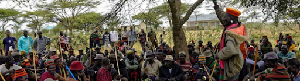

To promote diversification of livelihoods of the vulnerable groups of pastoralists (agro- pastoralists, fisher folk, and nomadic livestock communities) in order to result into a healthy, empowered and prosperous Turkan through appropriate people-centered and participatory approaches.
- Diversified livelihoods of pastoralists, agro-pastoralists, and fisher folks
- Improved household food and income security
- Improved household nutrition status
- Improved social and economic status of people
- Conserved, protected, and sustainable natural resources
- Improved adult literacy and school enrolment levels
- Peaceful co-existence among Karamoja cluster communities
- Communities that are aware of their rights
- Improved programming of CBOs, FBOs, and local NGOs.
Turkana County - Turkana County is in northwest Kenya and share borders with Marsabit and Samburu to the Northeast and south east respectively and Baringo and West Pokot Counties to the south east and southwest respectively. It also shares international borders with Uganda, South Sudan, and Ethiopia Countries to west, northwest, and north respectively. (Fig. 1. Map of Kenya showing Turkana County). The area is characterized by historical underdevelopment, insecurity and conflicts, food insecurity, frequent droughts and variability in natural resources, inadequate water, poor road infrastructure, livestock disease outbreaks, limited economic activities, and poor access to basic services such as health and education. Pastoralism is the main livelihood. Due to variability in rangeland resources, strategic mobility is critical for pastoralists to access water and grazing resources. Besides livestock keeping, the Turkana people are involved in agro-pastoralism, fishing, and other livelihood activities such as trade.
The Greater Karamoja Cluster - this is a region encompassing areas of Ethiopia, Kenya, South Sudan and Uganda. The Karamoja cluster refers to an area of land that straddles the borders between South-Western Ethiopia, North-Western Kenya, South-Eastern South Sudan, and North-Eastern Uganda. It is occupied by at least 13 pastoralist and agro-pastoralist communities (including Bokora, Dessenech, Didinga, Dodoth, Jie, Matheniko, Nyangatom, Thur, Pian, Pokot, Tepeth, Topotha, and Turkana). The shared border of the cluster is approximately 8,382 km.
- Damien Aryong’ Nawot, Chairman – BA (Sociology and Political Science) and Diploma in Range Management
- Willimena Asekon Lokalei, Secretary – Social Development and Transformation
- Beatrice Egiron, Treasurer – Bachelor of Education
- Peter Malakwen Ekitela, Executive Board Member – Bachelor of Business Management
- Chris Ekutan Erukudi, Executive Board Member – MSc (Land and Water Management- Dry land Farming); BSc Agribusiness; Diploma Agricultural Engineering
- Eipa Egiron Justus, Member – BA (Education)
- Margaret Nawiyakwan Kuchal, Member – Masters in Public Administration and Management
- Amoit Jotham Ereng, Member – BSc (Disaster Management and International Diplomacy)
- Vonwilly Etiir Naleng’o, Member – Bachelor of Science
- Eng’omo Brenda Kokoi, Member – BA (Development Studies)
- Catholic Diocese of Lodwar
- Turkana County Government
- Mercy Corps
Turkan Livelihoods Diversification Organization (TuLDO), P.O.Box 247-30500, Lodwar.
Tel. 254719354710; +254757983405 Email: info@tuldo.org
o Livestock-based livelihoods – local breed improvement; pasture production and conservation
o Crop-based livelihoods – dry land techniques in crop, vegetable, and fruit production
o Diversified livelihoods – bee keeping; fishing; support to small businesses through micro-finance initiatives
o Peace, justice, and conflict resolution – cross-border peace initiatives for Karamoja cluster communities
o Natural resource management – water for production, domestic use, and for livestock; environmental protection; rangeland governance and restoration
o Disaster risk management – training in disaster risk reduction and anticipatory action in the context of climate change
o Education – adult literacy; support to formal education (school infrastructure, awareness raising)
o Technical support (through consultancies and training) to community-based organizations (CBOs), Faith-based Organizations (FBOs), and local Non-Governmental Organizations (NGOs).
o Governance – civic (voter) education; social accountability/audits; human rights promotion
o Policy advocacy – pastoralism and other related aspects
o Collaboration and networking – with government, local and international non-governmental organizations, and academic and research institutions that provide or endeavor to provide services to the Turkana and other Ateker people.
o Cross-cutting issues – mainstreaming gender, social inclusion of vulnerable groups, and HIV/AIDS into programming
Cross-border peace dialogue meetings – organized dialogue meetings for community elders, Kraal leaders, and herders within Turkana County, and between the Turkana and the Karamoja to promote peaceful co-existence, streamline cross-border natural resource sharing through formal agreements, and to promote strategic mobility. A key output was signing of a multilateral memorandum of understanding between the four countries (Kenya, Uganda, South Sudan, and Ethiopia) on cross-border cooperation in animal health and natural resource sharing in 2019. Other activities aimed to promotion of peaceful co- existence included cross-border livestock vaccinations and trade. See Fig. 1 and 2 – pictures of peace dialogue meetings

Support to cropping and fruit tree planting as diversified livelihoods and for food security – supported Lokipoto and Nawatom communities in Turkana West Sub-county, Turkana County by providing crop and vegetable seeds (sorghum, maize and vegetables), tools (jembes, forked jembes, slashers, hoe) as well as fruit tree seedlings (mango, pawpaw, guavas, ) and seedlings for other trees (Neem, Ziziphus spp, balanitesBalanites aegypticaaegyptiaca). These communities live at the border with Karamoja, Uganda.
Bee keeping as a diversified livelihood activity – supported by providing beehives and training to Nawatom community in Turkana West Sub-county, Turkana County.
Rangeland management – capacity building of traditional rangeland management governance systems by supporting intercommunity meetings (led by kraal leaders) on planning for grazing zones in the dry and wet seasons (Fig. XX).